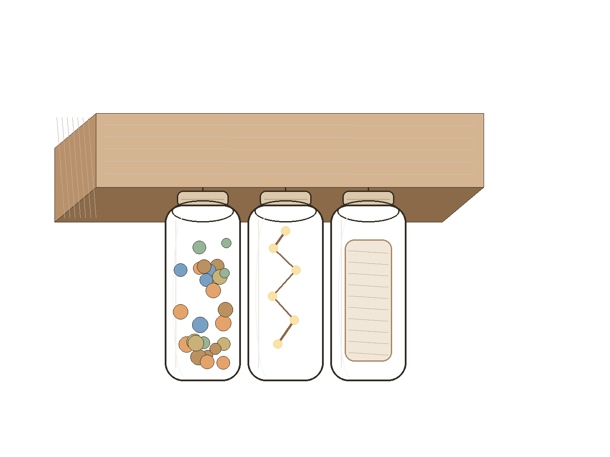
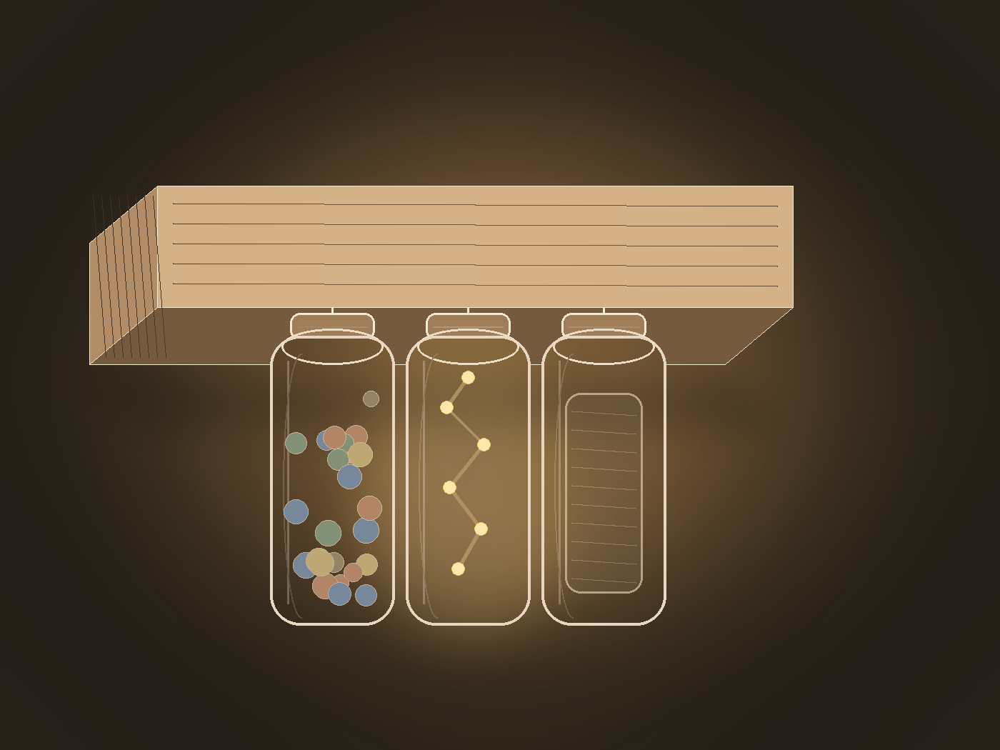
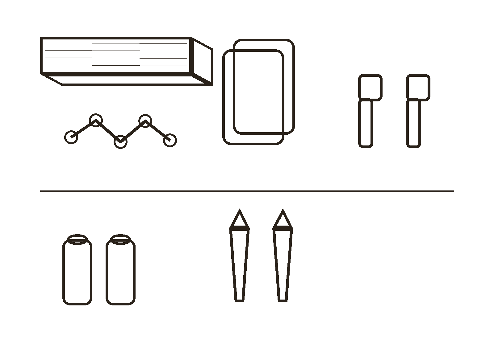
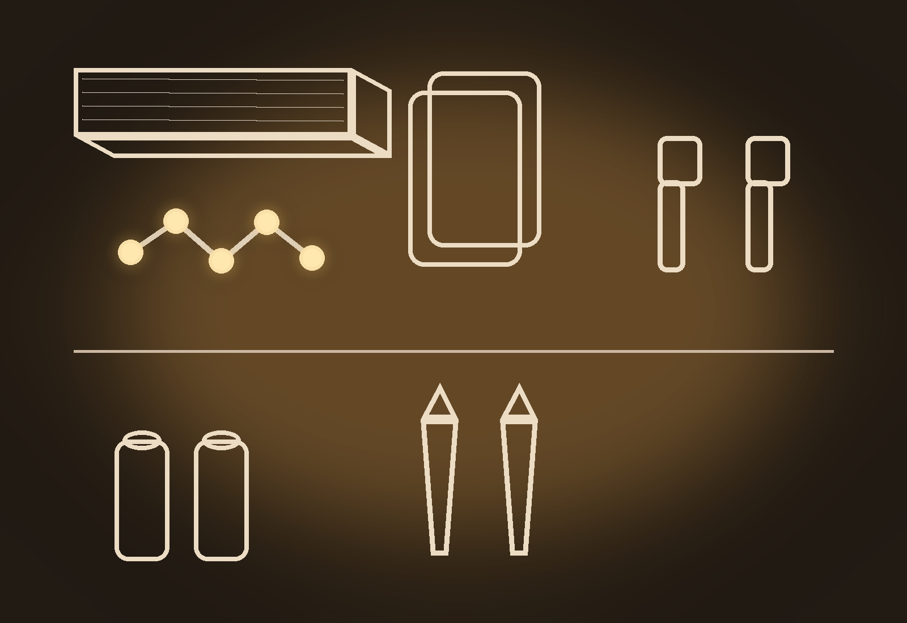

Create your own shelf with recycled jars.
A small wooden shelf with hanging jars for fairy lights, spices, and other little treasures.


How it works
Our kit gives you the special parts you may not already have at home. The rest is easy to find, reuse, or recycle. Enjoy the process and create your own personalised shelf.
Materials
Clean your jars
Make sure your jars are clean and dry before you continue.
Decorate the jars
Now comes the fun part: get creative. Use your arts and crafts materials to design your jars. If you need inspiration, here are a few ideas to get you started.
Optional: pick what each jar will hold:
Prepare the fairy light jar
Ask an adult to help you drill a hole in the lid. Then thread the fairy lights through the hole and place them neatly inside the jar.
Glue the lids to the shelf
Glue only the jar lids to the wooden shelf.
Mount the shelf
With an adult’s help, attach the wall brackets to the shelf and mount it securely to the wall.
- ✓ Glass can break – handle with care
- ✓ Ask an adult for help with drilling
- ✓ Use only battery-operated lights
Attach the jars
Twist the jars into the lids fixed under the shelf.
You’re done!
Your personalised jar shelf is ready to use and enjoy.